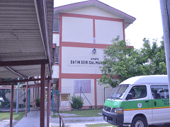
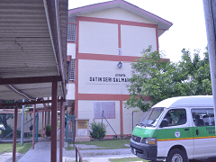

FACILITIES IN RUMAH BAKTI DATO' HARUN
The first block houses the Administration Office to 7 staff members, the Chairman's room and the meeting room. The second block houses 4 tuition classes and 1 Gymnasium (exercise equipment is a contribution from Herbalife Nutrition)

WOODEN BUILDING FOR DINING HALL & KITCHEN
The dining hall houses a set of table chairs complete with a sink and kitchen for cooking
DORMITORY OF PUTERA DATO' SERI HARUN


DORMITORY OF PUTERI DATIN SERI SALMAH SULAIMAN
 
SURAU
It is possible to place approximately 200 people at a time.

SOURCE CENTER BUILDING (IBN SINA LIBRARY)
It is divided into two parts, namely a library and a computer booth for the purposes of children learning and making references and work involving computers.

BUS
It is necessary to go to school (morning and evening sessions), visit and also fulfill the pick-up.
VAN
BADMINTON COURT


SEPAK TAKRAW RINK


NETBALL/FUTSAL COURT


SOCCER FIELD


PLAYGROUND